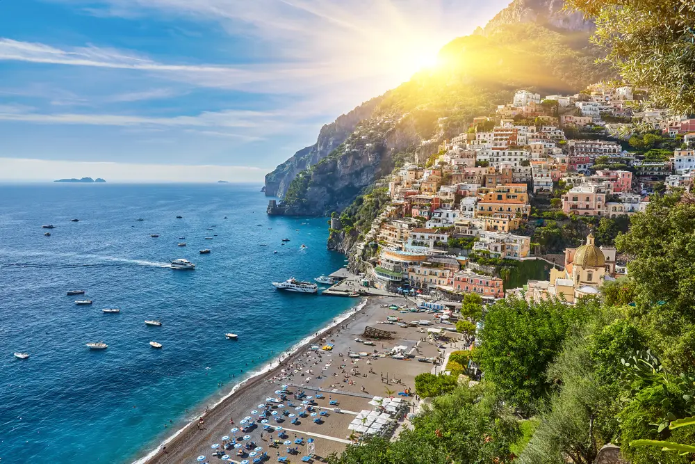

The tour departs from Nerano at 9:00 / 9:15 am and returns at 5:30 pm. The first fascinating stop of the tour is Li Galli Island, famous for the legend of the mythical mermaids singing to Ulysses’ sailors. The boat then sails towards Amalfi, known all over the world for its breathtaking views and colorful coastline. After about 3 hours stop in Amalfi, where you can admire the Cathedral and the ancient Arsenal, the tour continues towards Conca dei Marini, the Fiord of Furore, the magnificent Praiano and Positano with a 1.5 hour stop. During the navigation you will also see the Fjord of Crapolla and the small Isca Island before returning along the coast to Nerano.
There are two times a day Departure around 8:00 am or 10:00 am from Via degli Aranci (near the apartment). Return around 7:00 pm or or 9:00 pm in Sorrento.
Reservation required at least 2 days in advance through us. Payment is made directly to the boat company on the day of the tour.